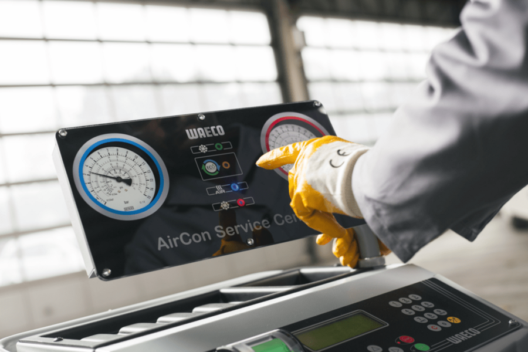
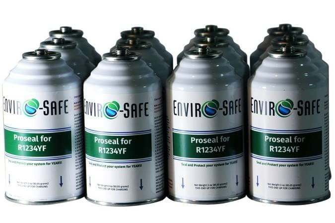
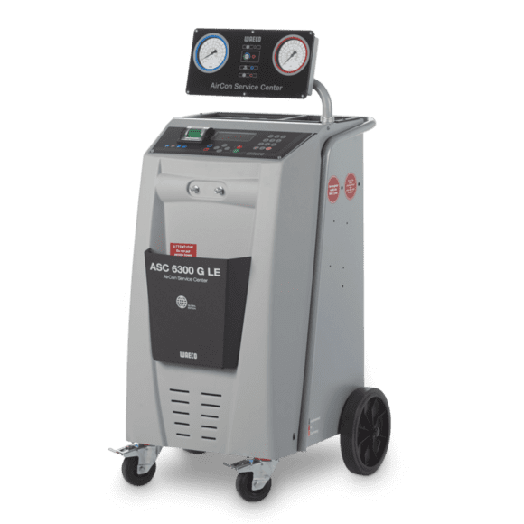

Bij Autocenterkella hebben onze reparatieservices voor vrachtwagenairco's een grote impact gehad op onze klanten, en hebben ze hun rijervaring op meer dan één manier verbeterd. Onze toewijding aan het leveren van reparaties van topkwaliteit heeft ervoor gezorgd dat chauffeurs een comfortabele omgeving in hun vrachtwagens kunnen behouden, zelfs tijdens de meest slopende reizen. Dit comfort is niet alleen een luxe; het is een noodzaak voor degenen die lange uren op de weg doorbrengen en te maken hebben met wisselende weersomstandigheden. Door de efficiëntie van vrachtwagen- en auto-aircosystemen te herstellen en te behouden, hebben we talloze chauffeurs geholpen om te genieten van een koelere, aangenamere rit, wat direct bijdraagt aan hun algehele welzijn en focus.
Onze snelle en efficiënte service is van onschatbare waarde gebleken voor chauffeurs die voor hun levensonderhoud afhankelijk zijn van hun vrachtwagens en auto's. Stilstand kan kostbaar zijn en wij begrijpen de urgentie om zo snel mogelijk weer op de weg te zijn. Door onze snelle diagnose en reparaties hebben we de tijd die onze klanten niet op de weg doorbrengen tot een minimum beperkt, waardoor ze hun werk met minimale verstoring kunnen voortzetten. Deze toewijding aan snelle, betrouwbare service heeft ons het vertrouwen opgeleverd van chauffeurs die weten dat ze op ons kunnen rekenen wanneer ze dat het hardst nodig hebben.
Bovendien heeft onze grondige aanpak van reparaties en onderhoud de luchtkwaliteit in de vrachtwagens en auto's van onze klanten aanzienlijk verbeterd. Schone ventilatieopeningen en filters verbeteren niet alleen de koelprestaties, maar zorgen er ook voor dat de lucht in de cabine fris en vrij van verontreinigende stoffen is. Deze verbetering van de luchtkwaliteit draagt bij aan een gezondere rijomgeving, vermindert vermoeidheid en bevordert een betere algehele gezondheid voor chauffeurs die lange uren achter het stuur doorbrengen.
Contacteer ons
AUTO CENTER KELLA
Maandag tot en met donderdag: